overview
design
design goals
syntax
features
technical implementation
lexer / parser
compiler
virtual machine
about me
freelance software developer (Audiomovers)
Groningen, the Netherlands
musicology
self-taught
iOS, web, C++, Rust
guitar / drums
cykle /
polybeat
ohm
"ohm is a live coding language for sound and music"
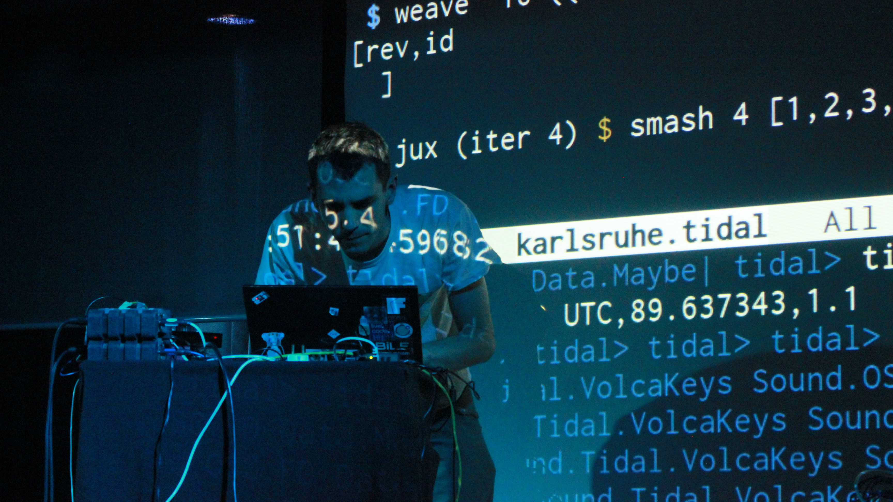
Alex McLean (TidalCycles )
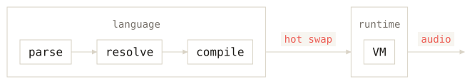
programming language
runtime + virtual machine
hot swapping / live editing
working with sound at the sample level :
"declarative language for defining audio graphs"
written in Rust 🦀
$ ./ohm patch.ohm
executable binary
watches
file
WebAssembly
motivation
why make an audio programming language?
fun!
flexibility / malleability
building UIs is a lot work!
research project
built for myself
inspire others
open source
(MIT)
non-rigorous approach
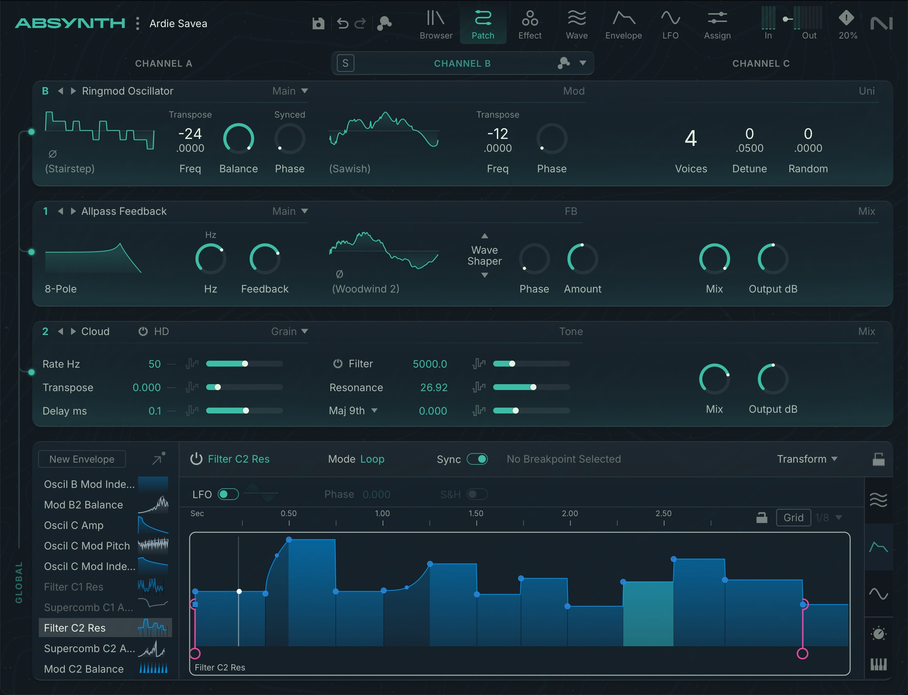
Absynth (Native Instruments)
design goals
improvisation
encourage happy accidents
minimal yet expressive syntax
modular / composable
syntax
Lisp
S-expressions
prefix / Polish notationeasy to parse
hard to read (inside out)
lots of parentheses
syntax
Forth
postfix / reverse Polish notation (RPN)trivial to parse
maps to (virtual) machine instructions
maps to signal flow
write-only?
syntax
ohm
infix notationno parentheses in function calls (ML, Haskell, Ruby)
syntax
pipe operator:
F#, Elixir, OCaml, Koto, etc.
output of lhs gets applied as first argument to the rhs
signal
in ohm everything is a signal
a signal is a stream of numbers
any expression produces a signal, i.e.:
no distinction between audio - and control signals:
some uses for signals
1. sound : oscillate between -1 and 1
2. parameter control : static value or modulation
3. logic / control flow
or nonzero
,
,
,
, etc.
generative sequencing:
4. signal-driven sequencing
usually we sequence with discrete events (e.g. MIDI)
...and/or clock (pulse) signals
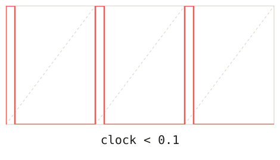
signal-driven sequencing
time as a slope / rate of change
continuous unipolar phasor signal
musical time is cyclical (bars, beats, etc.)
global ambient
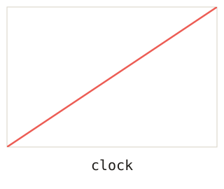
signal-driven sequencing
reverse ramp / envelope:
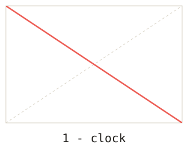
signal-driven sequencing
clock multiplication (
) or division (
)
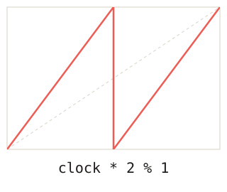
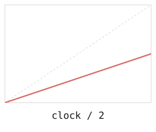
derive polyrhythms by fractional multiplication
signal-driven sequencing
bend time with non-linear ramp:
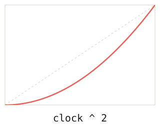
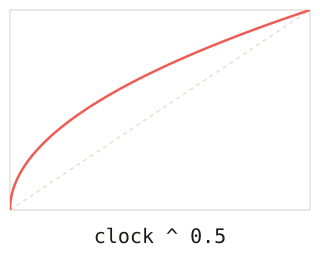
signal-driven sequencing
create (negative) swing with non-linear ramp
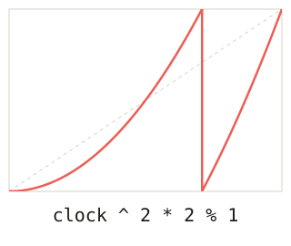
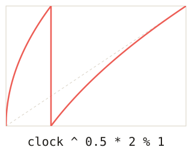
signal-driven sequencing
scrub/nudge/phase shift time forward or backward by adding or
subtracting:
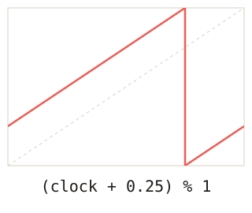
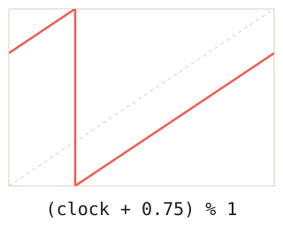
signal-driven sequencing
randomize/jitter time with noise source (e.g. pink noise* )
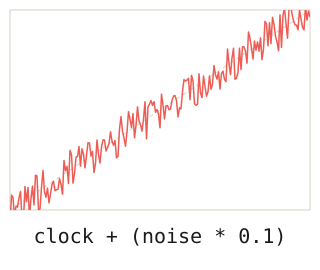
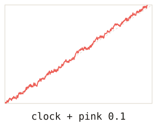
sequences:
rests
nesting
sequences can contain any expression:
stacks:
polyphony
multichannel expansion
a chord is a stack:
stereo output:
destructuring :
stack / sequence: nesting
stacks can be nested in sequences:
...or vice versa:
feedback:
i.e., recursion / cycles
counter: x = ~x + 1
IIR one pole filter:
~x is equivalent to ~x[1]~x[n] for arbitrary delays
n can be fractional, .e.g: ~x[1.2]
feedback:
phase modulation synthesis (FM)
cross-modulation
implementation
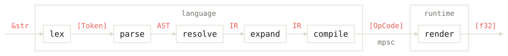
1. lex
turns raw text into a flat list of tokens
Num(f32) | Ident(String) | Arrow | LParen | Newline |
etc.
2. parse
parse tokens into an Abstract Syntax Tree
AST node: Assignment | Expression
assignment: identifier + expression
expression: Number(f32) | Binary(Expr, Op, Expr) | etc.
3. resolve
inline function calls (built-in or user-defined)
IR : subset of AST (minus calls and bindings)
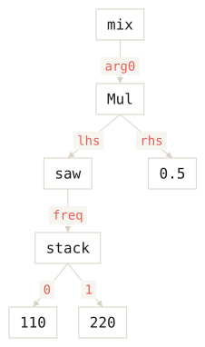
4. expand
expands resolved IR into multichannel representation
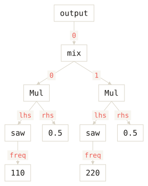
5. compile
compile expanded IR into a flat list of opcodes
postfix
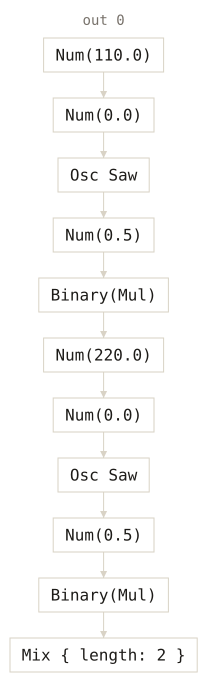
6. render
virtual machine (VM)
runs on audio thread
state slots
e.g., oscillator phase
allows hot swapping
Playback needs a web server: python3 -m http.server -d web,
then open localhost:8000/slides.html
‹
›